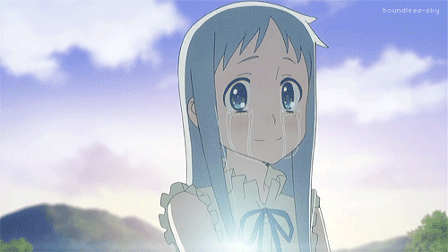

"The goal is not to be better than other man, but your previous self."
A picture that represents when I'm happy

Danieh. Duck GIF. 2021. Tenor, https://tenor.com/view/duck-gif-21763997.
A picture that represents when I'm sad
Anonymous. Be Brave GIF. 2015. Tumblr, https://38.media.tumblr.com/tumblr_m22vbw4CCa1qmpcvlo2_500.gif.